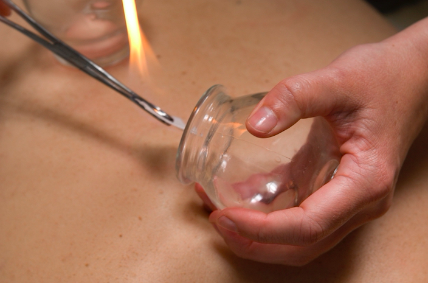

Acupuncture and Female Fertility
Traditional Chinese Medicine beliefs there is a life energy flowing through the body which is termed Qi. This energy flows through the body on channels known as meridians that connect all of our major organs. According to Chinese medical theory, illness arises when the cyclical flow of Qi in the meridians becomes unbalanced. Acupuncture is the stimulation of specific points located near or on the surface of the skin which have the ability to alter various biochemical and physiological conditions in order to achieve the desired effect.
Also, acupuncture can have a positive effect for those trying to conceive, it is also frequently used in conjunction with IVF treatment. Acupuncture is part of Traditional Chinese Medicine (TCM), developed in China more than 2000 years. Other forms of TCM include Chinese Herbs, Tui-Na (Massage), Cupping therapy, dietary therapy and Qigong (exercise). TCM acupuncture is a holistic therapy that seeks to look at the person as a whole. Treatment is done by the gentle insertion and stimulation of thin, disposable sterile needles at strategic points near the surface of the body. Acupuncture practitioner will look at the symptoms presented by the patient through questioning, looking at the tongue and checking the pulse. Information gathered can give a clue to what is happening to the person internally.
Acupuncture helps with infertility by:
- Regulating fertility hormones and stress factors that can disrupt the functions of the hypothalamic pituitary-ovarian axis (HPOA).
- Increasing blood flow to the reproductive organs, thereby improving the thickness of the endometrial lining and increasing chances of embryo implantation
- Increase egg production and improving the quality of the oocyte
- Regulating follicle stimulation hormone-receptor expression
- Normalising cortisol and prolactin levels on IVF medication days
- Promoting embryo implantation
- Reducing stress
Cupping & Moxa
Cupping is an ancient Chinese therapy that helps to regulate the flow of energy and blood. There are different forms cupping, in clinic small to medium glass jars are used. Suction is created by warming the air inside the jar and turning the jar over on the patient's body. The vacuum causes a drawing up of the underlying tissues into the cups, pulling inner congestion in the body up and out. The amount of suction is regulated according to the treatment and the age of the patient. After the cup is removed the skin will appear red and bruised. The marking will take several days but will go away, and the person should notice an immediate improvement in their condition.
Moxibustion plays an important role in Chinese Medicine and is frequently used alongside acupuncture treatment.
Moxibustion commonly known as Moxa is the leaves of the Chinese herb mugwort (Artemesiae Vulgaris), which are then dried and burned using one of several of several methods. In clinic Moxa is burnt over the acupuncture needle, which in turns stimulates the acupoints. Moxibustion promotes and improves general health, and is favourable in treating conditions such as arthritis, digestive disorders and many more.
Cosmetic Acupuncture
Cosmetic acupuncture has been catching the attention of increasing numbers of celebrities who want to enhance their beauty and health. It has been featured on Channel 4 TV series such as 'Ten Years Younger' and 'How Not to Get Old'.
Aging, stress and widespread heating and cooling of office environment all affect the balance of water and oil content of the skin. Cosmetic Acupuncture is a totally natural and holistic anti-ageing treatment that aims to reduce fine lines and wrinkles, and at the same time your practitioner will use specific acupuncture points tailored to your physical and emotional health.
What Can Cosmetic Acupuncture Do?
- Reduction in depth and appearance of wrinkles
- Reduction in puffiness and bloating on face and around the eyes
- Lift and tone sagging muscles and skin
- Improve complexion through promoted circulation and increased collagen production
- Improve skin elasticity and skin tone
- Moistens and hydrates the skin
- Improves general facial colour and help discolouration
- Tightens pores
- Counters acne scarring and scar tissue generally
- Benefits of reduced risks as it is a non surgical procedure
- Additional general health boost treatment
Medical Microdermabrasion
With over a decade of success around the world, the microdermabrasion procedure has been used to treat millions of satisfied people. The benefits of microdermabrasion include:
- Less pain or discomfort
- Minimal risk
- Suitable for all skin types
- No anaesthesia required
- No recovery time
- No hazardous chemicals
Because the microdermabrasion procedure is performed under the supervision of a certified professional, patients can be con dent they will be treated with the utmost care.
How it works
Derma Genisis Microdermabrasion uses a highly controlled flow of fine, medical grade crystals to remove the dead, outermost layer of skin. This skin exfoliation process reveals the new, living skin cells that are soft, smooth and receptive to nutrients.
Microdermabrasion is commonly used to treat and diminish:
- Fine Lines and Wrinkles
- Sun Damaged Skin
- Acne Prone Skin
- Blackheads and Whiteheads
- Hyperpigmentation
- Dry or Patchy Skin
- Oily Skin
- Superficial Age Spots
The procedure is performed by using a hand piece that the operator passes over the skin. This evenly removes the stratum corneum, the outermost layer of skin.At the same time the underlying epidermis is also stimulated by the abrasion and the vacuum. This promotes new collagen which thickens the dermis and improves resistance to the effects of ageing.
Dermaroller
Derma-Roller or Micro needling is the use of tiny needles on the face and body to achieve therapeutic effect. Your practitioner will use different sizes of needles according to your cosmetic needs.
Derma-Roller works by rolling high level of micro-needling across the skin surface. There is virtually no pain or permanent damage to the facial skin. They can be used on nearly any part of the body. It is important to keep in mind that with extended and persistent use, the results get better and better.
What's the Benefit?
One of the greatest benefits the derma-roller offers is the ability to maximise any skin cream that you may be using. Your skin will be highly absorbent and receptive so using any specialist anti-aging or high vitamin C, E and aloe-vera cream is advised. In the treatment a specialist vitamin wipe would be used followed by a vitamin rich cream that would be massaged in to the skin with a jade roller. This is especially soothing for your skin.